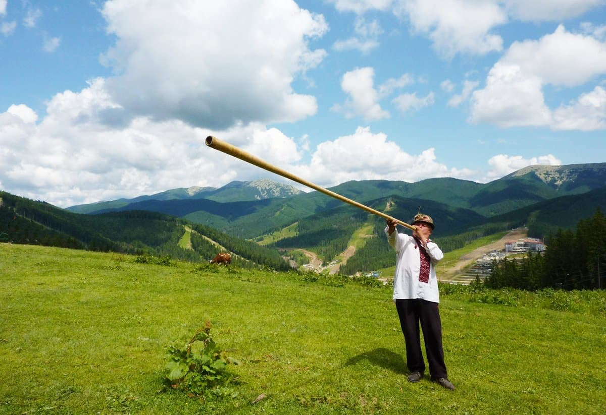
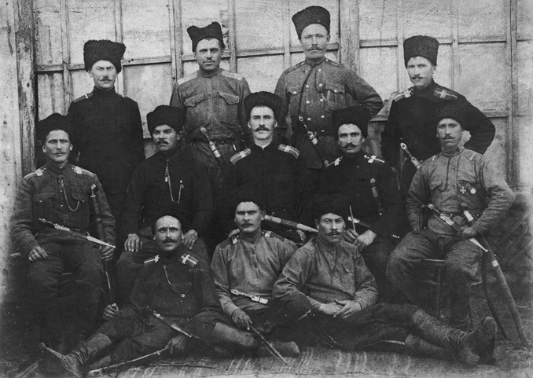
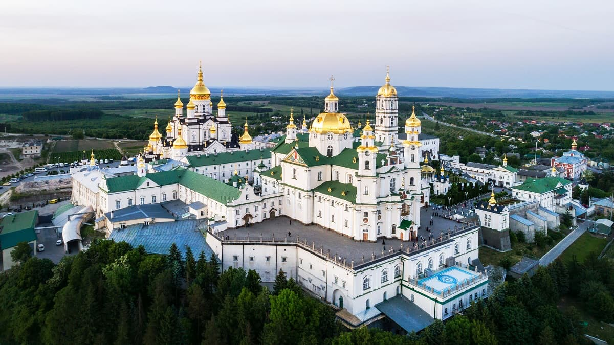

- Географічний центр Європи знаходиться неподалік міста Рахів, що на Закарпатті.
- Українці – найспівочіша нація, яка за даними ЮНЕСКО створила найбільшу кількість народних пісень. На другому місці – Італія.
- Острозька академія, заснована в 1576 році – перший вищий навчальний заклад у Східній Європі.
- Українська трембіта є найдовшим духовим музичним інструментом у світі. Довжина трембіти може сягати чотирьох метрів. 
- На території України знаходяться найбільші запаси чорнозему у світі – ¼ всіх чорноземів на планеті. Вони займають близько 60% території нашої держави.
- Одна з найвідоміших різдвяних мелодій у світі – «Щедрик» українського композитора Миколи Леонтовича, відомий під назвою Carol of the Bells.
- Найбільша пустеля Європи – «Олешківські піски». Вона знаходиться на території Херсонської області і займає площу 160 тисяч гектарів.
- Українська мова була офіційною мовою Кубанської народної республіки у 1918 – 1920 роках. 
- Найглибша у світі станція метро – «Арсенальна» у Києві. Вона пролягає на глибині 105 метрів під землею.
- АН-225 «Мрія», спроектований ДП «Антонов» – найбільший у світі транспортний літак, за всю історію авіації. Його довжина – 84 м, а розмах крил – 88 м.
- Україна – єдина країна світу, яка добровільно відмовилася від ядерної зброї. На початку 90-х наша держава володіла третім за потужністю ядерним арсеналом у світі.
- Перша у світі Конституція була створена українським гетьманом Пилипом Орликом у 1710 році. Для порівняння, у США такий документ було прийнято тільки у 1787 році.
- Першим букварем, виданим в Україні, був «Буквар» («Азбука»), надрукований у 1574 р. у Львові першодрукарем Іваном Федоровим.
- Загалом в Україні та світі налічується 1384 пам’ятники Тарасу Шевченку. Це найбільша у світі кількість монументів, встановлених діячу культури.
- У Харкові знаходиться найбільша у Європі міська площа. Це Площа Свободи, шириною 125 м. і протяжністю 750 м.
- У Карпатах знаходиться майже 20% всіх лісів України.
- З дванадцяти православних лавр світу, чотири знаходяться в Україні. 
- Найбільш високогірним містом України є м. Рахів, середня висота якого становить 820 метрів над рівнем моря.
- Село Космач в Косівському районі Івано-Франківської області – найбільше за територією селище в Європі. Воно займає площу 84,3 км.
- Всесвітній день вишиванки, який зараз святкують у всьому світі, був започаткований у 2006 році студенткою Чернівецького національного університету імені Юрія Федьковича, Лесею Воронюк.